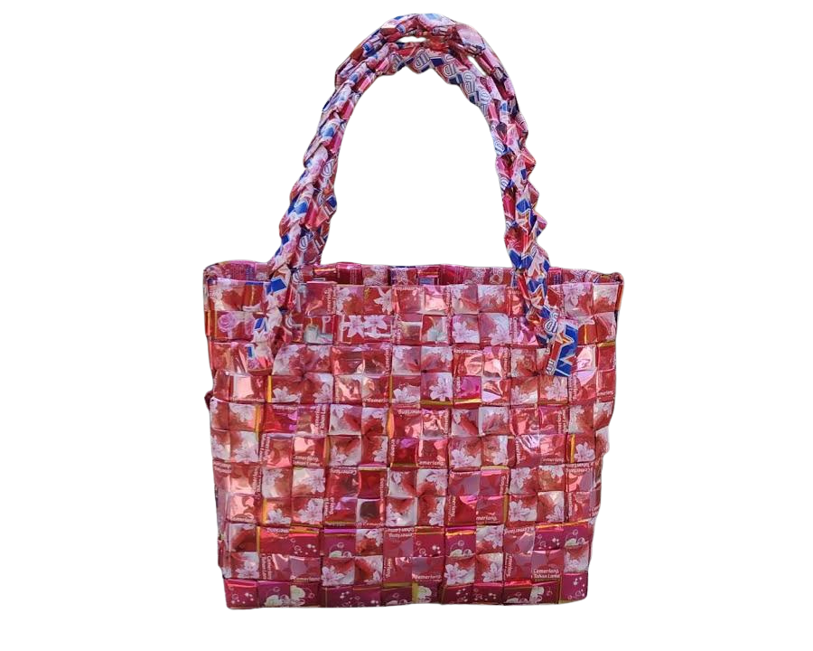

Tas Dari Anyaman Plastik

Plastik deterjen bisa kamu buat menjadi kerajinan tangan yang praktis dan sangat bermanfaat. Setelah kamu menggunakan deterjen, jangan langsung membuang kemasan plastik tersebut. Kamu bisa membuat kerajinan tangan dengan ide-ide kreatif yang kamu miliki. Seperti membuat tas dari anyaman plastik detergen. Tas seperti ini bisa digunakan sebagai tas belanja. Berikut cara membuat tas belanja dari anyaman plastik:
- Alat :
- Bahan :
- Plastik kemasan detergen besar
- Kain polos
- Furing
- Langkah kerja :
- Bersihkan Plastik Bekas Kemasan Sebelum Digunakan
- Mulailah Memotong Kemasan Plastik
- Menganyam Potongan-Potongan Plastik
- Menggabungkan Anyaman-Anyaman Plastik
- Gunakan Sisa Lipatan untuk Membuat Tali Tas
- Jahit Tali agar Menyatu dengan Tas Plastik
- Lapisi Bagian Dalam Tas Dengan Menambahkan Furing.
- Harga bahan :
- Kain polos : Rp. 7.000
- Furing : Rp.9.000
- Benang : Rp.2.000
- Plastik : Rp.0
- Total : Rp.18.000
- Harga jual : Rp.30.000
- Laba : Rp.12.000